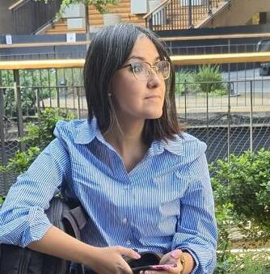

Kau del Viento
Aplicación web de comercio con Django y PostgreSQL. Gestión de productos y catálogo mediante el ORM. Arquitectura limpia orientada a producción.
Ver en GitHubPython Backend Developer
Ingeniera en Informática con más de 10 años en sistemas de datos y consultoría tecnológica. Construyo backend con Python y Django: código limpio, estructurado y orientado a resolver problemas reales.

38°44′S · 72°35′OSoy Ingeniera en Informática oriunda de Temuco, La Araucanía. Trabajé más de 10 años en consultoría tecnológica para empresas del sector energético, financiero y de telecomunicaciones —siempre del lado de los sistemas y los datos.
En 2025 decidí enfocar ese bagaje hacia el desarrollo backend con Python. No es un cambio brusco: es llevar lo que sé sobre bases de datos, entornos ágiles y sistemas en producción hacia un rol donde puedo construir.
Trabajo desde el sur, con criterio, disciplina y foco en la solidez técnica. El sur enseña a hacer las cosas bien y para largo.
 La Araucanía · Chile
La Araucanía · Chile
Formada y arraigada en Temuco. La distancia no es lejanía, es perspectiva.
Sistemas, datos y alta disponibilidad en energía, banca y telecomunicaciones.
Django, PostgreSQL y proyectos propios. Construyendo desde la base.
Aplicación web de comercio con Django y PostgreSQL. Gestión de productos y catálogo mediante el ORM. Arquitectura limpia orientada a producción.
Ver en GitHubSistema de gestión de registros culturales con Django. Relaciones entre modelos y operaciones CRUD mediante ORM. Orientado a conservación de patrimonio.
Ver en GitHubPlataforma de blog con Django para gestión de autores y artículos. Relaciones entre entidades y consultas ORM. Sistema de contenidos estructurado y extensible.
Ver en GitHubLas mejores soluciones nacen de la conversación. Disponible para construir desde el sur — con criterio, código limpio y foco en el problema real.
ColaborarEntre 2014 y 2025 desarrollé mi trayectoria en Everis, hoy NTT Data, participando en proyectos para clientes en energía, banca y telecomunicaciones. Fortalecí mi experiencia en soporte, operación y mantenimiento de sistemas, bases de datos y continuidad operativa..
Universidad Tecnológica de Chile INACAP
INACAP
Universidad Católica de Temuco
Fundación Telefónica Movistar
Banco Santander · Santander Open Academy
Microsoft
CertiProf
38°44′S · 72°35′O — Temuco, Chile